Simulation study
Shengtong Han
Data Generation
Basically, there are two sequential levels when generating the data. First under null hypothesis, generate total number of variants in cases and controls, i.e., AF \(q_{ij}^{(0)} \sim Beta(\alpha_0, \beta_0)\), \(X_{1ij}+X_{0ij} \sim Pois (N1+N0, q_{ij}^{(0)})\), filter out variants will null mutations, then re-distribute all mutations in effective variants into cases and controls depending on the risk status via conditional binomial distribution.
- gene level: \(U_i\) denote the risk status of gene \(i\), \(U_i \sim Ber(1, \delta)\). All genes share the same risk probability \(\delta\).
- variant level:
\(U_i=0\), all variants for gene \(i\) are non-causal, which is under null hypothesis. Given the generated \(X_{1ij}+X_{0ij}\), split into case and controls by conditional binomial distribution, with \(p=\frac{N1}{N1+N0}\).
\(U_i=1\), gene \(i\) is a causal gene, the variant \((i,j)\) whose risk status is denoted by \(Z_{ij}\) is generated as \(Z_{ij} \sim Ber(1, \pi(\eta))\), \(\pi(\eta)\) is a function linking annotations to the probability of being causal.
1. $Z_{ij}=0$ (which is under null), given the generated $X_{1ij}+X_{0ij}$, split into case and controls by conditional binomial distribution, with $p=\frac{N1}{N1+N0}$. 2. $Z_{ij}=1$ (which is under alternative), AF $q_{ij}^{(1)} \sim Beta(\alpha, \beta)$, $\gamma_{ij} \sim Gamma(\bar{\gamma}*\sigma, \sigma)$, $X_{1ij}+X_{0ij} \sim Pois(N1+N0, q_{ij}^{(1)})$, split into case and control by conditional binomial distribution with $p=\frac{N1*\gamma_{ij}}{N1*\gamma_{ij}+N0}$.
Filtering step: filter variants that have null variant counts in both cases and controls.
Notations:
- N1, N0 are sample sizes in cases and controls
- \(q_{ij}\) is allele frequency for variant \((i,j)\)
- \(\bar{\gamma}\) relative risk
\(\pi(\eta)\) is the link function between annotations and prior probability and the interest is in estimating \(\eta\).
Disjoint group priors
Comparison between MIRAGE-VS and other methods
We simulated 100 variants in one category. \(N1=N0=1000, 3000, 5000\), \(\eta=0.1, 0.2, 0.3, 0.4\), \(\bar{\gamma}=5\), \(\alpha=\alpha_0=0.1\), \(\beta=2000, \beta_0=1000\). We independetly run Monte Carlo 100 times and calculate the true positive rate for MIRAGE-VS, burden test and SKATO. Note here there is no gene information. MIRAGE-VS basically estimates the proportion of risk variants \(\hat{\eta}\), and performs the likelihood ratio test to get p value.
## Warning: Using `size` aesthetic for lines was deprecated in ggplot2 3.4.0.
## ℹ Please use `linewidth` instead.
## This warning is displayed once every 8 hours.
## Call `lifecycle::last_lifecycle_warnings()` to see where this warning was
## generated.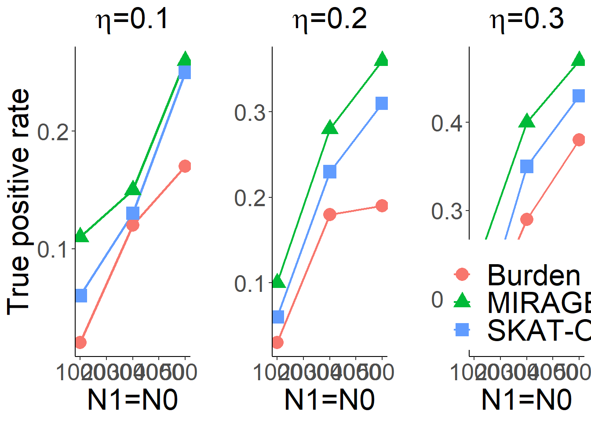
Sensitivity analysis of \(\bar{\gamma}\)
We simulated 100 variants in one category. \(\eta= 0.4\), true \(\bar{\gamma}=5\), and we vary \(\bar{\gamma}=3,4,5,6\) and \(N1=N0=1000, 3000, 5000\),, \(\alpha=\alpha_0=0.1\), \(\beta=2000, \beta_0=1000\). We independetly run Monte Carlo 1000 times and calculate the true positive rate for MIRAGE-VS, burden test and SKATO. Note here there is no gene information. MIRAGE-VS basically estimates the proportion of risk variants \(\hat{\eta}\), and performs the likelihood ratio test to get p value.
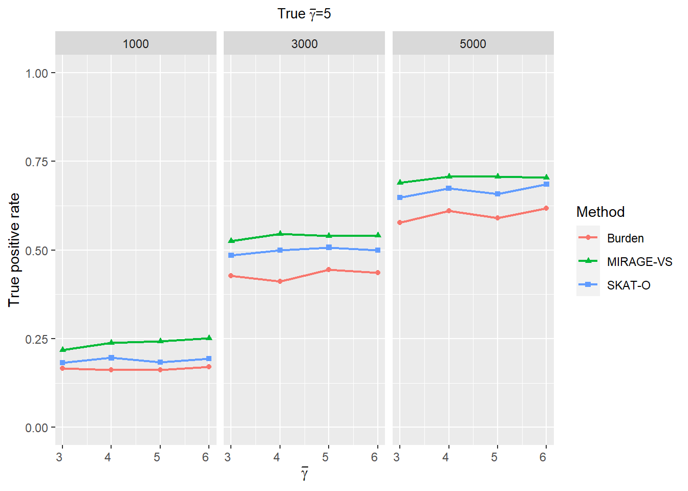
Type one error
To investigate the type one error, we simulated 1000 independent data sets, with varying sample size \(N1=N0=1000, 3000, 5000\), 100 variants in one group; no risk variants, i.e., \(\eta=0\) and other parameters are pretty the same as before \(\alpha_0=0.1, \beta_0=1000,\alpha= 0.1, \beta=2000,\bar{\gamma}=5,\sigma= 1\). The basic idea is to see the proportion of significant test under null.
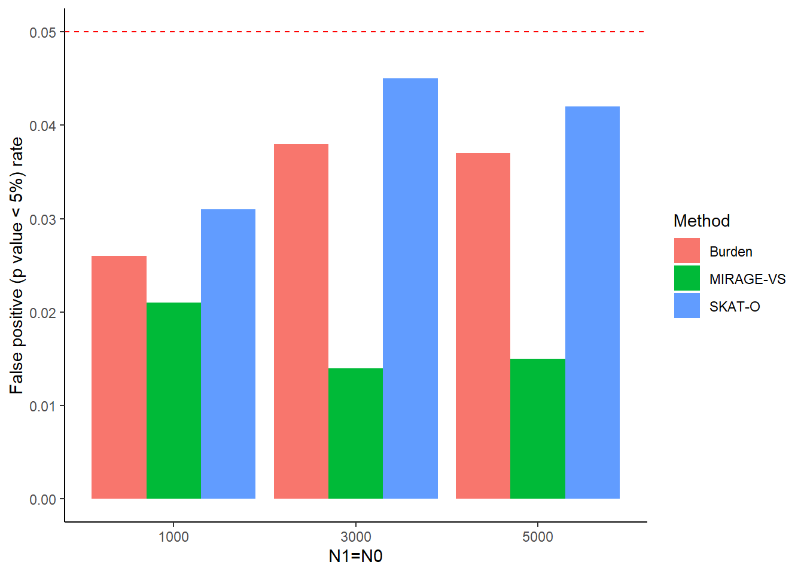
Burden test: use fisher exact test MIRAGE: first estimate parameter \(\eta\), then do likelihood ratio test

This is to test how sensitive is the effect of mis-specified \(\bar{\gamma}\) on type one error.
The same parameter settings. The only diffrence is that \(\bar{\gamma}=5\) when generating the data and different mis-specified \(\bar{\gamma}\) (on x axis) is used to make inference. N1=N0=3000.
All genes are risk genes, fix \(\delta=1\), only estimate \(\eta\)
- parameter estimate: (I) relative risk effect, \(\bar{\gamma}\) on estimating \(\eta\)
Since variant groups are assumed to be independent, it suffices to demonstrate the parameter estimate only for one risk variant group.
Parameter settings: N1=N0=3000, \(\alpha=\alpha_0=0.1\), \(\beta=2000, \beta_0=1000\). 100 genes, each having 1000 variants with \(\eta_i=0.1\) risk variants, but the actural \(\eta_i\) is varying for each generated data set because of the filtering. \(\bar{\gamma}=2,3,4,5\) and with each \(\bar{\gamma}\), perform 100 independent runs.
- Parameter estimate (II): sample size effect on estimating \(\eta\)
Parameter settings: N1=N0=1000, 3000, 5000, \(\alpha=\alpha_0=0.1\), \(\beta=2000, \beta_0=1000\). 100 genes, each having 1000 variants with \(\eta_i=0.1\) risk variants, but the actural \(\eta_i\) is varying for each generated data set because of the filtering. \(\bar{\gamma}=5\). For each fixed sample size, perform 100 independent runs.
- power comparison with other methods
For every simulated risk gene, three different methods are used to test the power of detecting risk genes. Significance level of 0.05 is used as cutoff. Burnden test looks at the variants in cases and controls and performs the enrichment analysis for every gene. SKATO tests the significance of effect size and generate p value without covariates. MIRAGE-LRT first estimates the parameter \(\eta\), then does a likelihood ratio test and returns p value by \(\chi^2_k\) (\(k\) is the number of unknown parameters \(\eta\)).
Case 1: every risk gene only has one risk variant group with the proportion of \(\eta\) and fixed \(\bar{\gamma}\)
Parameter settings: N1=N0=3000 \(\alpha=\alpha_0=0.1\), \(\beta=2000, \beta_0=1000\). 100 genes, each having 1000 variants with \(\eta=0.1, 0.2, 0.3\) risk variants, but the actural \(\eta\) is varying for each generated data set because of the filtering. \(\bar{\gamma}=5\). For every \(\eta\), perform 100 independent runs.
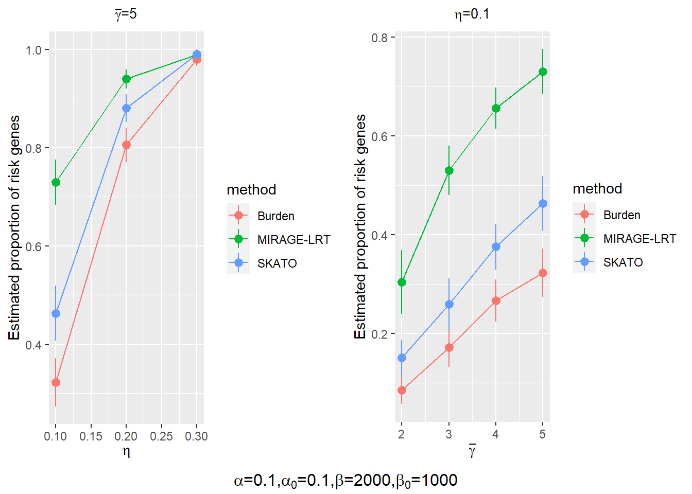
Case 2: every risk gene has multiple risk variant groups with varying proportion of \(\eta\) and fixed \(\bar{\gamma}\)
Parameter settings: N1=N0=3000 \(\alpha=\alpha_0=0.1\), \(\beta=2000, \beta_0=1000\). 100 genes, each having 1000 variants in three different groups, the first group has 30% variant, the second has 40% and the rest 30% are in the third group. In each group of every gene, the proportion of risk genes \(\eta\) is varying at 0.01, 0.05, 0.1 respectively. \(\bar{\gamma}=2, 3,4, 5\). For every \(\bar{\gamma}\), perform 100 independent runs.

Case 3: every risk gene has multiple risk variant groups with varying proportion of \(\eta\) and varying \(\bar{\gamma}\)
Parameter settings: N1=N0=3000 \(\alpha=\alpha_0=0.1\), \(\beta=2000, \beta_0=1000\). 100 genes, each having 1000 variants in three different groups, the first group has 30% variants, the second has 40% and the rest 30% are in the third group. In each variant group of every gene, the proportion of risk variants \(\eta\) is varying at 0.01, 0.05, 0.1 and every risk category has its own \(\bar{\gamma}=5, 3,1\) respectively. The basic idea is that the rarer the varinat is, the more effect size it tends to have. Perform 100 independent runs.
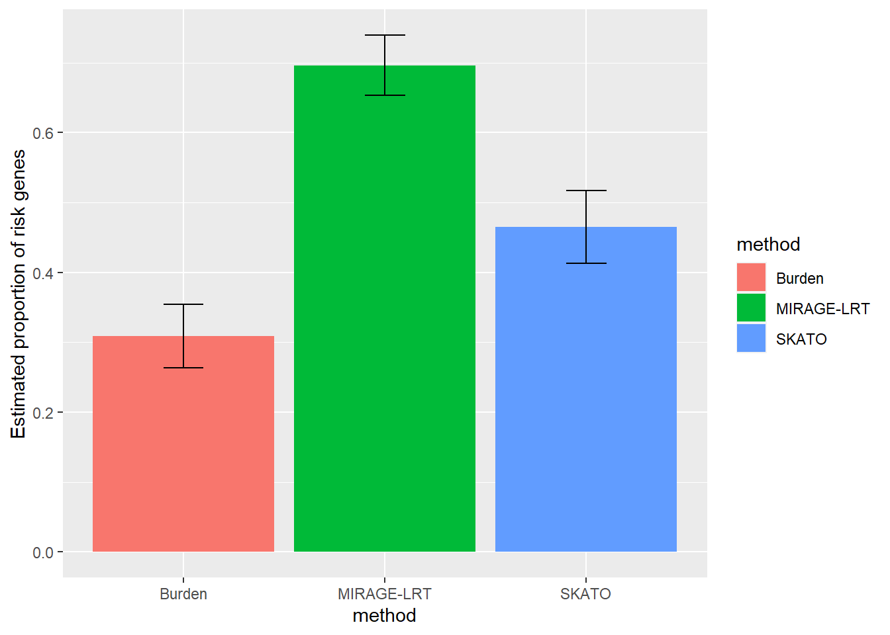
Mixture of risk genes and non-risk genes \(0<\delta<1\), estimate both \(\eta, \delta\)
Since the simulated data is a mixture of risk genes and non-risk genes, drawing ROC curve is one way to test the power of discriminating risk genes of different methods. For MIRAGE, Bayes factor of every gene was calculated and used to plot ROC, called MIRAGE-BF.
Power comparison
case 1: one risk gene has only one risk variant category with fixed \(\bar{\gamma}\)
Parameter settings: N1=N0=3000 \(\alpha=\alpha_0=0.1\), \(\beta=2000, \beta_0=1000\). 100 genes, each having 1000 variants with \(\eta=0.03, 0.07, 0.1, 0.2\) risk variants, but the actural \(\eta\) is varying for each generated data set because of the filtering. \(\delta=0.5\), i.e. half genes are risk genes and the rest half are nonrisk genes. \(\bar{\gamma}=5\).
case2: one risk gene has multiple risk variant categories with group specific \(\bar{\gamma}\)
Parameter settings: N1=N0=3000 \(\alpha=\alpha_0=0.1\), \(\beta=2000, \beta_0=1000\), \(\delta=0.5\). 100 genes, each having 1000 variants in three different groups, the first group has 30% variants, the second has 40% and the rest 30% are in the third group. In each variant group of every gene, the proportion of risk variants \(\eta\) is varying at 0.01, 0.05, 0.1 and every risk category has its own \(\bar{\gamma}=5, 3,1\) respectively. The basic idea is that the rarer the varinat is, the more effect size it tends to have.

Parameter settings: N1=N0=3000 \(\alpha=\alpha_0=0.1\), \(\beta=2000, \beta_0=1000\), \(\delta=0.1, 0.2, 0.3, 0.4\). 1000 genes, each having 100 variants in three different groups, the first group has 60% variants, the second has 30% and the rest 10% are in the third group. In each variant group of every gene, the proportion of risk variants \(\eta\) is varying at 0.05, 0.2, 0.5 and every risk category has its own \(\bar{\gamma}\) respectively. The basic idea is that the rarer the varinat is, the more effect size it tends to have.
burden test: for every gene, use all variants in cases and control
\(\bar{\gamma}=1, 3,5\)

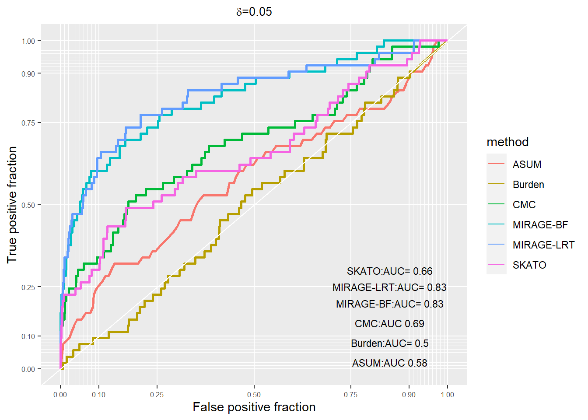
burden-adj: for every gene, compute p values for 3 variant categories, adjust p values by bonferroni correction and take the minimum
\(\bar{\gamma}=3,3,5\). burden-comb: use Fisher method to combine p values from 3 independent tests.
burden test: use fisher exact test in R on total counts of transmitted and un-transmitted alleles
SKAT-O test: use R package-SKAT with method “SKATO” chosen.
ASUM: use ASUM function in R package AssotesteR, with 100 permutations
CMC: use CMC function in R package AssotesteR, with 100 permutations, and
maf=10^(-4)*c(0.05, 0.2, 0.5).ACAT p value: within each of 3 variant groups, run ACAT on p value of every single variant by burden test (collapse variant if its MAC<10, as ACAT paper suggested) to obtain group level p value, then use ACAT to combine group level p value to get gene level p values
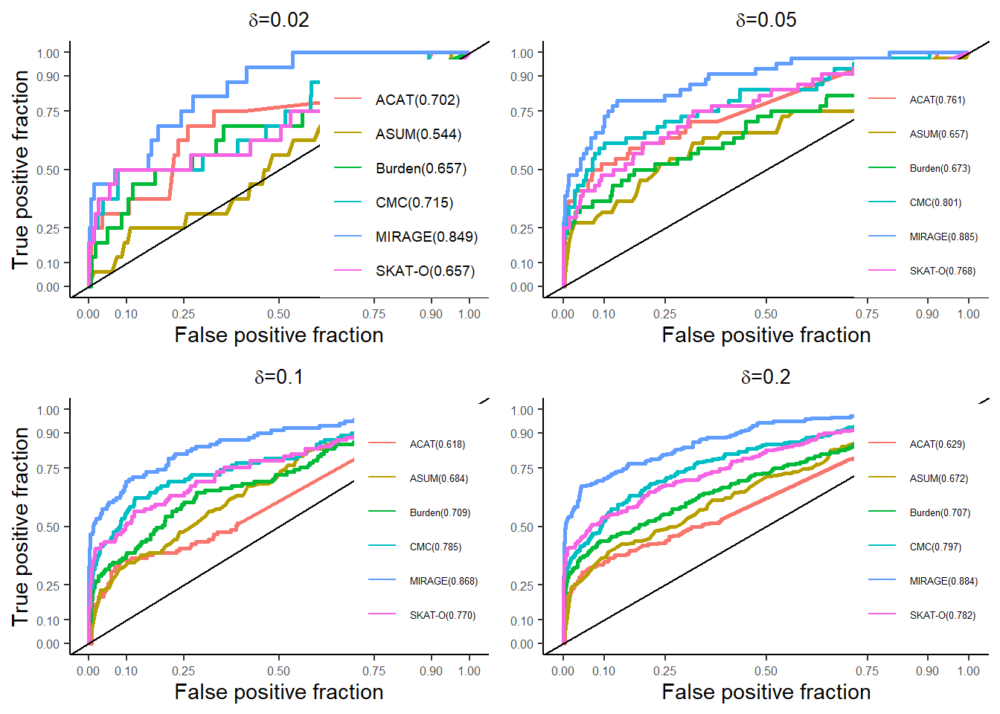
Comparisons among three burden tests
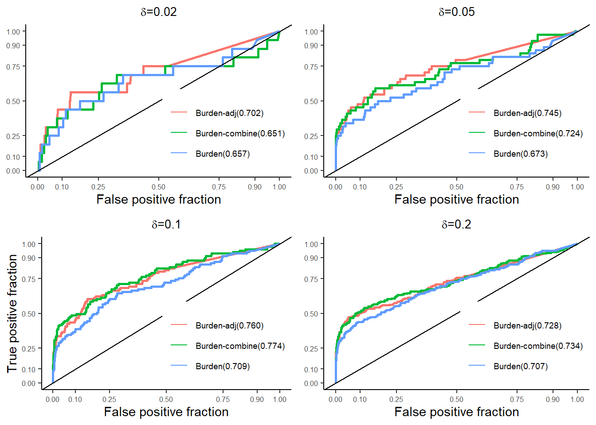
rm("Ui", "mirage_pvalue", "mirage_BF", "fisher_pvalue", "skato_pvalue", "cmc_pvalue", "asum_pvalue", "acat.pvalue", "fisher.separate.pvalue")
load("../output/Var_specific_bargamma_MixedGene_MixtureVariant/7methods_delta0.02_gammamean335_5rep1.RData")
AUC_summary_0.02=matrix(nrow=10, ncol=6)
colnames(AUC_summary_0.02)=c("ACAT", "ASUM", "Burden", "CMC", "MIRAGE", "SKAT-O")
#for (i in 1:10)
{
i=2
Ui=Gene.Risk.Status[[i]]
mirage_pvalue=MIRAGE.pvalue[[i]]
mirage_BF=MIRAGE.BF[[i]]
fisher_pvalue=Fisher.pvalue[[i]]
skato_pvalue=SKATO.pvalue[[i]]
cmc_pvalue=CMC.pvalue[[i]]
asum_pvalue=ASUM.pvalue[[i]]
fisher.separate.pvalue=Fisher.separate.pvalue[[i]]
acat.pvalue=ACAT.pvalue[[i]]
fisher.adj.pvalue=numeric()
fisher.combine.pvalue=numeric()
for (ii in 1:nrow(fisher.separate.pvalue))
{
fisher.adj.pvalue[ii]=min(p.adjust(fisher.separate.pvalue[ii,], method = "bonferroni", n = length(fisher.separate.pvalue[ii,])))
fisher.combine.pvalue[ii]=pchisq(-sum(log(fisher.separate.pvalue[ii,])), df=6, ncp = 0, lower.tail = TRUE)
}
# fisher.adj.pvalue[i]=min(fisher.separate.pvalue[i,])
num_run=length(mirage_pvalue)
method=rep(c("Burden(0.657)", "SKAT-O(0.657)", "MIRAGE(0.849)", "CMC(0.715)", "ASUM(0.544)", "ACAT(0.702)"), each=num_run) # AUC is from round(calc_auc(p1.basic)$AUC, 2)
roc_single_run=data.frame(D=Ui, m=c(fisher_pvalue,skato_pvalue, -mirage_BF, cmc_pvalue, asum_pvalue, acat.pvalue), method=method)
p1.basic=ggplot(roc_single_run, aes(d = D, m = m, color=method), size=2) +
geom_roc(increasing=F, n.cuts=0)+
style_roc(theme = theme_grey)
p1_delta0.02=p1.basic+
# annotate("text", x =rep(0.7, 8), y = c(0.02,0.08, 0.14, 0.2, 0.25, 0.3, 0.35, 0.4),
# label = paste(c("ASUM:AUC", "Burden_adj:AUC", "Burden:AUC=", "Burden_comb:AUC", "CMC:AUC", "MIRAGE-BF:AUC=", "MIRAGE-LRT:AUC=", "SKATO:AUC="), round(calc_auc(p1.basic)$AUC, 2)), size=2)+
ggtitle(expression(paste(delta, "=0.02")))+
theme_classic()+
theme(plot.title = element_text(hjust = 0.5, size=10))+ #center the title
theme(axis.text.x= element_text(size=8))+ # custmorize the axis tick size
theme(axis.text.y= element_text(size=10))+
theme(axis.text = element_text(size = 1))+
geom_abline(intercept = 0, slope =1, col="black")+ # add a diagnal line
theme(legend.title=element_blank())+ # nol legend title
theme(legend.justification=c(1,0), legend.position=c(1,0))+
theme(legend.text = element_text(size = 11)) # adjust legend text size
#p1_delta0.01
#calc_auc(p1.basic)$AUC
AUC_summary_0.02[i,]=calc_auc(p1.basic)$AUC
}
############################################################################################################
################################ delta=0.1
rm("Ui", "mirage_pvalue", "mirage_BF", "fisher_pvalue", "skato_pvalue", "cmc_pvalue", "asum_pvalue", "acat.pvalue", "fisher.separate.pvalue")
load("../output/Var_specific_bargamma_MixedGene_MixtureVariant/7methods_delta0.1_gammamean335_5rep.RData")
AUC_summary_0.1=matrix(nrow=5, ncol=6)
colnames(AUC_summary_0.1)=c("ACAT", "ASUM", "Burden", "CMC", "MIRAGE", "SKAT-O")
#for (i in 1:5)
{
i=1
Ui=Gene.Risk.Status[[i]]
mirage_pvalue=MIRAGE.pvalue[[i]]
mirage_BF=MIRAGE.BF[[i]]
fisher_pvalue=Fisher.pvalue[[i]]
skato_pvalue=SKATO.pvalue[[i]]
cmc_pvalue=CMC.pvalue[[i]]
asum_pvalue=ASUM.pvalue[[i]]
fisher.separate.pvalue=Fisher.separate.pvalue[[i]]
acat.pvalue=ACAT.pvalue[[i]]
fisher.adj.pvalue=numeric()
fisher.combine.pvalue=numeric()
for (ii in 1:nrow(fisher.separate.pvalue))
{
fisher.adj.pvalue[ii]=min(p.adjust(fisher.separate.pvalue[ii,], method = "bonferroni", n = length(fisher.separate.pvalue[ii,])))
fisher.combine.pvalue[ii]=pchisq(-sum(log(fisher.separate.pvalue[ii,])), df=6, ncp = 0, lower.tail = TRUE)
}
# fisher.adj.pvalue[i]=min(fisher.separate.pvalue[i,])
num_run=length(mirage_pvalue)
method=rep(c( "Burden(0.682)", "SKAT-O(0.751)", "MIRAGE(0.859)", "CMC(0.784)", "ASUM(0.634)", "ACAT(0.638)"), each=num_run)
roc_single_run=data.frame(D=Ui, m=c(fisher_pvalue,skato_pvalue, -mirage_BF, cmc_pvalue, asum_pvalue, acat.pvalue), method=method)
p2.basic=ggplot(roc_single_run, aes(d = D, m = m, color=method), size=2) +
geom_roc(increasing=F, n.cuts=0)+
style_roc(theme = theme_grey)
#pdf("../../Figure/power_comparison_different_methods.pdf")
p2_delta0.1=p2.basic+
# annotate("text", x =rep(0.7, 8), y = c(0.02,0.08, 0.14, 0.2, 0.25, 0.3, 0.34, 0.4),
# label = paste(c("ASUM:AUC", "Burden_adj:AUC", "Burden:AUC=", "Burden_comb:AUC","CMC:AUC", "MIRAGE-BF:AUC=", "MIRAGE-LRT:AUC=", "SKATO:AUC="), round(calc_auc(p2.basic)$AUC, 2)), size=2)+
ggtitle(expression(paste(delta, "=0.1")))+
theme_classic()+
theme(plot.title = element_text(hjust = 0.5, size=10))+ #center the title
theme(axis.text.x= element_text(size=8))+ # custmorize the axis tick size
theme(axis.text.y= element_text(size=10))+
theme(axis.text = element_text(size = 1))+
geom_abline(intercept = 0, slope =1, col="black")+ # add a diagnal line
theme(legend.title=element_blank())+ # nol legend title
theme(legend.justification=c(1,0), legend.position=c(1,0))+
theme(legend.text = element_text(size = 11))+ # adjust legend text size
theme(axis.title.y = element_blank()) # remove labels on y axis
AUC_summary_0.1[i,]=calc_auc(p2.basic)$AUC
}
#p2_delta0.05
#grid.arrange(p1, p2, top=grid.text("ROC curves"), bottom=grid.text(expression(paste(alpha, "=0.1,", alpha[0], "=0.1,", beta, "=2000,", beta[0], "=1000"))), nrow=1)
#dev.off()
#grid.arrange(p1_delta0.01, p2_delta0.05, nrow=1)
#pdf("C:/Users/hans/OneDrive - Marquette University/RareVariant/Fig3-power_comparison_MIRAGE-gene_2023_0417.pdf")
#pdf("C:\\Shengtong\\Research\\rare-var\\RareVariant\\2023_0413_Figure_for_paper\\Fig3-power_comparison_MIRAGE-gene_2023_0421.pdf")
grid.arrange(p1_delta0.02, p2_delta0.1, nrow=1) #dev.off()- use threshold
MAC<10for variant collapsing for ACAT
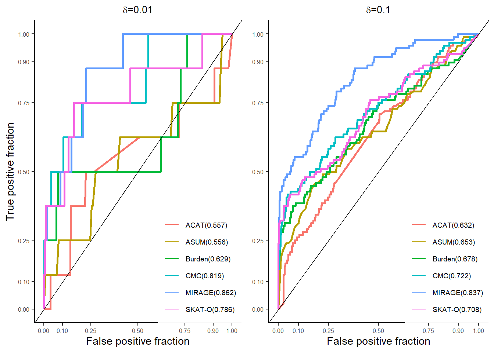
* use threshold MAC<5 for variant collapsing for
ACAT
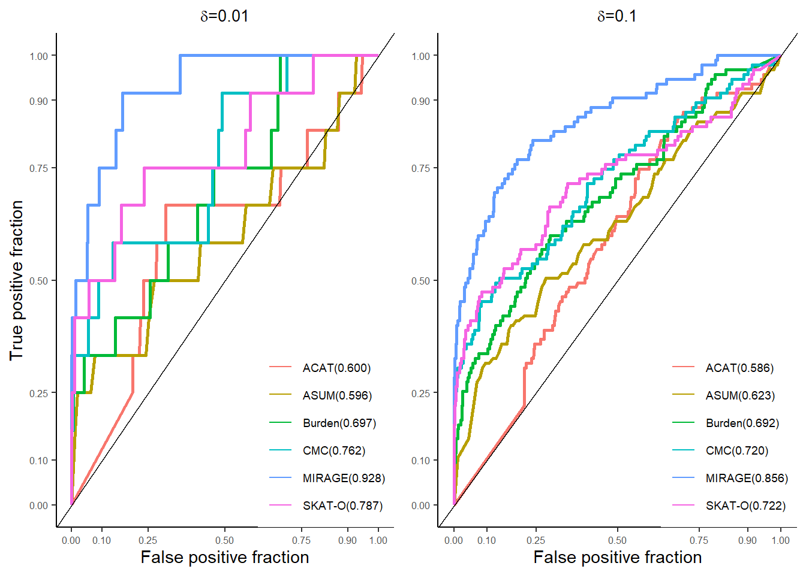
- no collapsing for ACAT
Parameter estimate
\(\beta_1=0.05,\beta_2=0.2, \beta_3=0.5, \delta=0.1\)
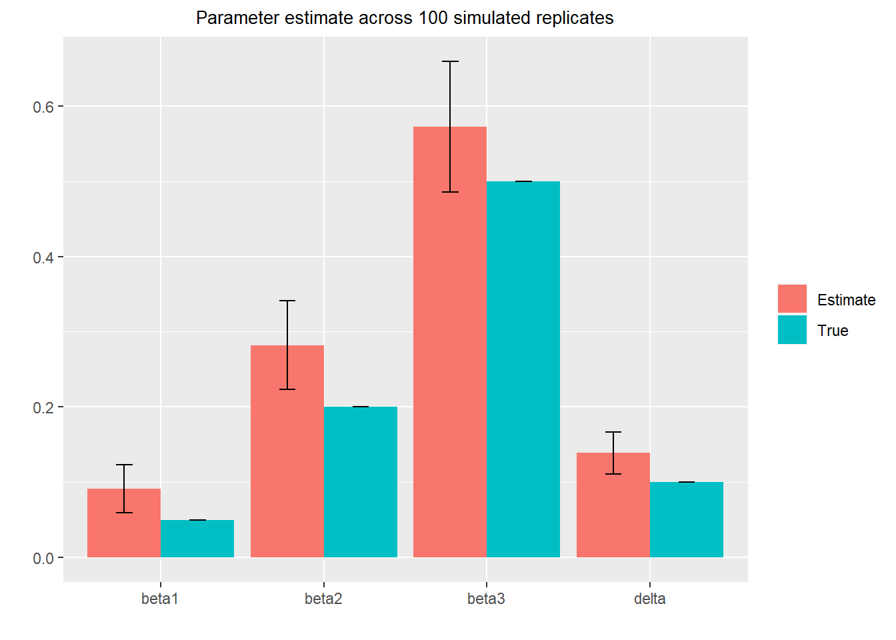
type I error
Only variant level, no gene level
To investigate the type one error, we simulated 100 independent data sets, each with \(N1=N0=3000\), 100 variants in one group; no risk variants, i.e., \(\eta=0\) and other parameters are pretty the same as before \(\alpha_0=0.1, \beta_0=1000,\alpha= 0.1, \beta=2000,\bar{\gamma}=4,\sigma= 1\).
## `stat_bin()` using `bins = 30`. Pick better value with `binwidth`.Burden test: use fisher exact test MIRAGE: first estimate parameter \(\eta\), then do likelihood ratio test
To investigate the type one error, we simulated one independent data set, with \(N1=N0=3000\), 1000 genes are all non-risk genes. Every gene has 100 variants in three non-risk variant groups; no risk variant groups i.e., \(\eta=0\) and other parameters are pretty the same as before \(\alpha_0=0.1, \beta_0=1000,\alpha= 0.1, \beta=2000,\bar{\gamma}=3,4,5,\sigma= 1\).
## Warning: The dot-dot notation (`..count..`) was deprecated in ggplot2 3.4.0.
## ℹ Please use `after_stat(count)` instead.
## This warning is displayed once every 8 hours.
## Call `lifecycle::last_lifecycle_warnings()` to see where this warning was
## generated.## `stat_bin()` using `bins = 30`. Pick better value with `binwidth`.## `stat_bin()` using `bins = 30`. Pick better value with `binwidth`.## `stat_bin()` using `bins = 30`. Pick better value with `binwidth`.Bayesian FDR control
Bayesian FDR vs actual FDR
Simulated one data set, \(N1=N0=1000, 3000, 5000\), 10% of 1000 genes are risk genes. Every gene has 100 variants in three variant groups with \(\eta_1=0.05, \eta_2=0.2, \eta_3=0.5\) and \(\bar{\gamma}=3,3,5\) respectively and the proportion of variants are 60%, 30% and 10%. Other parameters are pretty the same as before \(\alpha_0=0.1, \beta_0=1000,\alpha= 0.1, \beta=2000,\sigma= 1\).
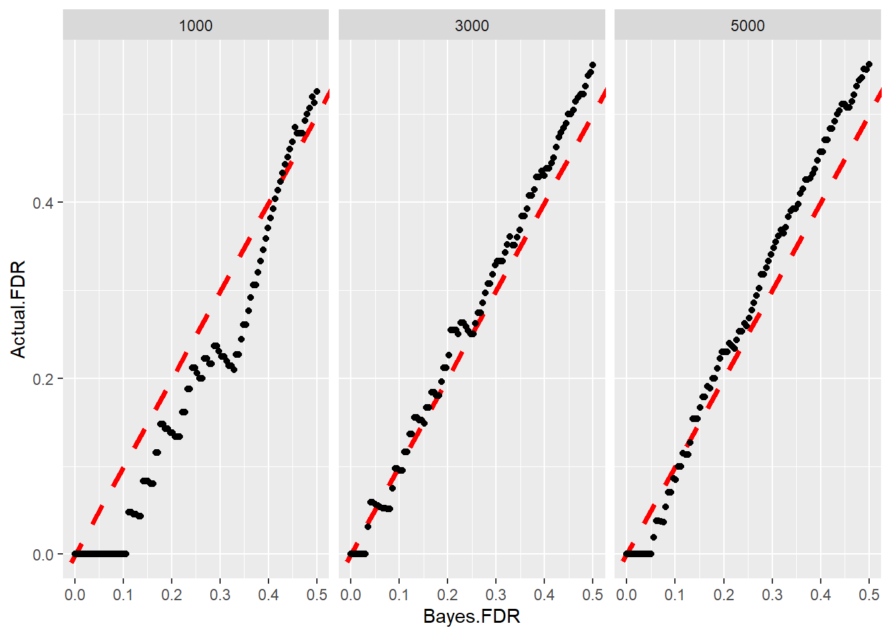
Robustness of Bayesian FDR for \(\bar{\gamma}\)
Simulated one data set, \(N1=N0=3000\), 10% of 1000 genes are risk genes. Every gene has 100 variants in three variant groups with \(\eta_1=0.05, \eta_2=0.2, \eta_3=0.5\) and the proportion of variants are 30%, 40% and 30%. Each data set has one fixed \(\bar{\gamma}\) and it is varied at \(\bar{\gamma}=3,4,5,6\). Other parameters are pretty the same as before \(\alpha_0=0.1, \beta_0=1000,\alpha= 0.1, \beta=2000,\sigma= 1\).
Repeat the simulation 20 times. When Bayesian FDR=0.05, what is the distribution of actual FDR.
##################### true gamma.bar=3 ##########
gene.prior=0.1 # use true value
gene.fdr=list()
num.run=20 # there are 20 replicates
bayesian.fdr=0.05
actual.fdr.range=matrix(nrow=4, ncol=num.run)
for (i in 3:6)
{
#i=3
############ compute posterior probability for every gene ##########
rm("all.delta.est", "all.BF.gene", "all.mirage.pvalue", "all.skat.pvalue", "all.fisher.pvalue", "all.Ui")
load(paste("../output/BayesianFDR/Mixed_Gene_Gammamean3_", "useGammabar", i, ".delta0.1_replicate100.RData", sep=""))
actual.fdr.range.single.run=numeric()
for (run in 1:num.run)
{ #run=1
Bayes.factor=tibble(BF=all.BF.gene[run,])
gene.post=Bayes.factor %>% mutate(post.prob=gene.prior*BF/(1-gene.prior+gene.prior*BF))
gene.post=as_tibble(cbind(gene.post, RiskStatus=all.Ui[run,]))
################ calculate Bayesian FDR for every post prob cutoff ###########
tau=seq(0, 0.999, by=0.001)
num.pred=NULL
false.disc=NULL
FDR=NULL
for (ii in 1:length(tau))
{
num.pred[ii]=sum(ifelse(gene.post$post.prob>tau[ii], 1, 0))
false.disc[ii]=sum((1-gene.post$post.prob)*ifelse(gene.post$post.prob>tau[ii], 1, 0))
FDR[ii]=false.disc[ii]/num.pred[ii]
}
tau.fdr=tibble(tau=tau, bar.fdr=FDR)%>%drop_na() # drop rows with NA
############### calculate actual FDR #################################
bayes.fdr=seq(0, 0.5, length=100)
actual.fdr=numeric()
tau.select=numeric()
for (ii in 1:length(bayes.fdr))
{
tau.select[ii]=max(tau.fdr %>% filter(bar.fdr>bayes.fdr[ii] & bar.fdr<bayes.fdr[ii]+0.1 ) %>% pull(tau))
No.Disc=gene.post %>% filter(post.prob>tau.select[ii]) %>% tally() %>% pull()
TP=gene.post %>% filter(post.prob>tau.select[ii]) %>% filter(RiskStatus==1) %>% tally() %>% pull()
# pull is used to convert tibble to a vector
actual.fdr[ii]=1-TP/No.Disc
}
bayes.actual.fdr=tibble(Bayes.FDR=bayes.fdr, Actual.FDR=actual.fdr) %>% mutate(Gamma.bar.use=i)
#gene.fdr[[i]]=list( gene.post=gene.post, bayes.actual.fdr=bayes.actual.fdr)
actual.fdr.range.single.run[run]=bayes.actual.fdr %>% filter(Bayes.FDR<bayesian.fdr-0.0001) %>% summarize(Actual.FDR=max(Actual.FDR)) %>% pull() # calculate the actual FDR when Bayesian.FDR=0.1
} # end of run
actual.fdr.range[i-2,]=actual.fdr.range.single.run
} # end of i
fdr.mean=rowMeans(actual.fdr.range)
fdr.sd=c(sd(actual.fdr.range[1,]), sd(actual.fdr.range[2,]), sd(actual.fdr.range[3,]), sd(actual.fdr.range[4,]))
max.ylab=max(fdr.mean+fdr.sd)
bar.gamma=3:6
actual.fdr.summary=data.frame(mean=fdr.mean, sd=fdr.sd, bar.gamma=bar.gamma)
p1=ggplot(actual.fdr.summary, aes(x=bar.gamma, y=mean, group=1)) +
geom_point() +
geom_pointrange(aes(ymin=mean-sd, ymax=mean+sd))+
ggtitle(expression(paste("True ", bar(gamma), "=3")))+
theme_classic()+
theme(plot.title = element_text(hjust = 0.5, size=10))+ #center the title
xlab(expression(paste(bar(gamma))))+
ylab("False Discovery Proportion")+ylim(c(-0.01, max.ylab))+
guides(fill=guide_legend(title=NULL))+
#ylim(0.05,0.15)+
geom_hline(yintercept=bayesian.fdr,linetype="dashed", color = "red")+
theme(axis.title.y=element_text(size=8)) # adjust text size for y labels
#combine.bayes.actual.fdr=bind_rows(gene.fdr[[3]]$bayes.actual.fdr,gene.fdr[[4]]$bayes.actual.fdr,gene.fdr[[5]]$bayes.actual.fdr,gene.fdr[[6]]$bayes.actual.fdr)
#combine.bayes.actual.fdr$Gamma.bar.use<-combine.bayes.actual.fdr$Gamma.bar.use %>% recode("3"="3", "4"="4", "5"="5", "6"="6")
#null.pvalue.combine$Method=null.pvalue.combine$Method %>% recode(MIRAGE.pvalue="MIRAGE_VS", Fisher.pvalue="Burden", SKATO.pvalue="SKATO")
#g1=ggplot(combine.bayes.actual.fdr, aes(x=Bayes.FDR, y=Actual.FDR, color=Gamma.bar.use))+
# geom_abline(intercept =0, slope =1,
# linetype="solid", size=1.5, col="black")+
# geom_point()+
# ggtitle(expression(paste("True ", bar(gamma), "=3")))+
# theme(plot.title = element_text(hjust = 0.5, size=10)) #center the title
#################################################################################################################
#################################################################################################################
##################### true gamma.bar=4 ##########
gene.prior=0.1 # use true value
gene.fdr=list()
actual.fdr.range=matrix(nrow=4, ncol=num.run)
for (i in 3:6)
{
#i=3
############ compute posterior probability for every gene ##########
rm("all.delta.est", "all.BF.gene", "all.mirage.pvalue", "all.skat.pvalue", "all.fisher.pvalue", "all.Ui")
load(paste("../output/BayesianFDR/Mixed_Gene_Gammamean4_", "useGammabar", i, ".delta0.1_replicate100.RData", sep=""))
actual.fdr.range.single.run=numeric()
for (run in 1:num.run)
{ #run=1
Bayes.factor=tibble(BF=all.BF.gene[run,])
gene.post=Bayes.factor %>% mutate(post.prob=gene.prior*BF/(1-gene.prior+gene.prior*BF))
gene.post=as_tibble(cbind(gene.post, RiskStatus=all.Ui[run,]))
################ calculate Bayesian FDR for every post prob cutoff ###########
tau=seq(0, 0.999, by=0.001)
num.pred=NULL
false.disc=NULL
FDR=NULL
for (ii in 1:length(tau))
{
num.pred[ii]=sum(ifelse(gene.post$post.prob>tau[ii], 1, 0))
false.disc[ii]=sum((1-gene.post$post.prob)*ifelse(gene.post$post.prob>tau[ii], 1, 0))
FDR[ii]=false.disc[ii]/num.pred[ii]
}
tau.fdr=tibble(tau=tau, bar.fdr=FDR)%>%drop_na() # drop rows with NA
############### calculate actual FDR #################################
bayes.fdr=seq(0, 0.5, length=100)
actual.fdr=numeric()
tau.select=numeric()
for (ii in 1:length(bayes.fdr))
{
tau.select[ii]=max(tau.fdr %>% filter(bar.fdr>bayes.fdr[ii] & bar.fdr<bayes.fdr[ii]+0.1 ) %>% pull(tau))
No.Disc=gene.post %>% filter(post.prob>tau.select[ii]) %>% tally() %>% pull()
TP=gene.post %>% filter(post.prob>tau.select[ii]) %>% filter(RiskStatus==1) %>% tally() %>% pull()
# pull is used to convert tibble to a vector
actual.fdr[ii]=1-TP/No.Disc
}
bayes.actual.fdr=tibble(Bayes.FDR=bayes.fdr, Actual.FDR=actual.fdr) %>% mutate(Gamma.bar.use=i)
#gene.fdr[[i]]=list( gene.post=gene.post, bayes.actual.fdr=bayes.actual.fdr)
actual.fdr.range.single.run[run]=bayes.actual.fdr %>% filter(Bayes.FDR<bayesian.fdr-0.0001) %>% summarize(Actual.FDR=max(Actual.FDR)) %>% pull() # calculate the actual FDR when Bayesian.FDR=0.1
} # end of run
actual.fdr.range[i-2,]=actual.fdr.range.single.run
} # end of i
fdr.mean=rowMeans(actual.fdr.range)
fdr.sd=c(sd(actual.fdr.range[1,]), sd(actual.fdr.range[2,]), sd(actual.fdr.range[3,]), sd(actual.fdr.range[4,]))
bar.gamma=3:6
actual.fdr.summary=data.frame(mean=fdr.mean, sd=fdr.sd, bar.gamma=bar.gamma)
p2=ggplot(actual.fdr.summary, aes(x=bar.gamma, y=mean, group=1)) +
geom_point() +
geom_pointrange(aes(ymin=mean-sd, ymax=mean+sd))+
ggtitle(expression(paste("True ", bar(gamma), "=4")))+
theme_classic()+
theme(plot.title = element_text(hjust = 0.5, size=10))+ #center the title
xlab(expression(paste(bar(gamma))))+
ylab("")+ylim(c(0, max.ylab))+
guides(fill=guide_legend(title=NULL))+
#ylim(0.05,0.15)+
geom_hline(yintercept=bayesian.fdr,linetype="dashed", color = "red")
###############################################################################################################
###############################################################################################################
##################### true gamma.bar=5, use gamma.bar=3,4,5,6 ##########
gene.prior=0.1 # use true value
gene.fdr=list()
actual.fdr.range=matrix(nrow=4, ncol=num.run)
for (i in 3:6)
{
#i=3
############ compute posterior probability for every gene ##########
rm("all.delta.est", "all.BF.gene", "all.mirage.pvalue", "all.skat.pvalue", "all.fisher.pvalue", "all.Ui")
load(paste("../output/BayesianFDR/Mixed_Gene_Gammamean5_", "useGammabar", i, ".delta0.1_replicate100.RData", sep=""))
actual.fdr.range.single.run=numeric()
for (run in 1:num.run)
{ #run=1
Bayes.factor=tibble(BF=all.BF.gene[run,])
gene.post=Bayes.factor %>% mutate(post.prob=gene.prior*BF/(1-gene.prior+gene.prior*BF))
gene.post=as_tibble(cbind(gene.post, RiskStatus=all.Ui[run,]))
################ calculate Bayesian FDR for every post prob cutoff ###########
tau=seq(0, 0.999, by=0.001)
num.pred=NULL
false.disc=NULL
FDR=NULL
for (ii in 1:length(tau))
{
num.pred[ii]=sum(ifelse(gene.post$post.prob>tau[ii], 1, 0))
false.disc[ii]=sum((1-gene.post$post.prob)*ifelse(gene.post$post.prob>tau[ii], 1, 0))
FDR[ii]=false.disc[ii]/num.pred[ii]
}
tau.fdr=tibble(tau=tau, bar.fdr=FDR)%>%drop_na() # drop rows with NA
############### calculate actual FDR #################################
bayes.fdr=seq(0, 0.5, length=100)
actual.fdr=numeric()
tau.select=numeric()
for (ii in 1:length(bayes.fdr))
{
tau.select[ii]=max(tau.fdr %>% filter(bar.fdr>bayes.fdr[ii] & bar.fdr<bayes.fdr[ii]+0.1 ) %>% pull(tau))
No.Disc=gene.post %>% filter(post.prob>tau.select[ii]) %>% tally() %>% pull()
TP=gene.post %>% filter(post.prob>tau.select[ii]) %>% filter(RiskStatus==1) %>% tally() %>% pull()
# pull is used to convert tibble to a vector
actual.fdr[ii]=1-TP/No.Disc
}
bayes.actual.fdr=tibble(Bayes.FDR=bayes.fdr, Actual.FDR=actual.fdr) %>% mutate(Gamma.bar.use=i)
#gene.fdr[[i]]=list( gene.post=gene.post, bayes.actual.fdr=bayes.actual.fdr)
actual.fdr.range.single.run[run]=bayes.actual.fdr %>% filter(Bayes.FDR<bayesian.fdr-0.0001) %>% summarize(Actual.FDR=max(Actual.FDR)) %>% pull() # calculate the actual FDR when Bayesian.FDR=0.1
} # end of run
actual.fdr.range[i-2,]=actual.fdr.range.single.run
} # end of i
fdr.mean=rowMeans(actual.fdr.range)
fdr.sd=c(sd(actual.fdr.range[1,]), sd(actual.fdr.range[2,]), sd(actual.fdr.range[3,]), sd(actual.fdr.range[4,]))
bar.gamma=3:6
actual.fdr.summary=data.frame(mean=fdr.mean, sd=fdr.sd, bar.gamma=bar.gamma)
p3=ggplot(actual.fdr.summary, aes(x=bar.gamma, y=mean, group=1)) +
geom_point() +
geom_pointrange(aes(ymin=mean-sd, ymax=mean+sd))+
ggtitle(expression(paste("True ", bar(gamma), "=5")))+
theme_classic()+
theme(plot.title = element_text(hjust = 0.5, size=10))+ #center the title
xlab(expression(paste(bar(gamma))))+
ylab("False Discovery Proportion")+ylim(c(0, max.ylab))+
guides(fill=guide_legend(title=NULL))+
#ylim(0.05,0.15)+
geom_hline(yintercept=bayesian.fdr,linetype="dashed", color = "red")+
theme(axis.title.y=element_text(size=8)) # adjust text size for y labels
###############################################################################################################
###############################################################################################################
##################### true gamma.bar=6, use gamma.bar=3,4,5,6 ##########
##################################################################
gene.prior=0.1 # use true value
gene.fdr=list()
bayesian.fdr=0.05
actual.fdr.range=matrix(nrow=4, ncol=num.run)
for (i in 3:6)
{
#i=3
############ compute posterior probability for every gene ##########
rm("all.delta.est", "all.BF.gene", "all.mirage.pvalue", "all.skat.pvalue", "all.fisher.pvalue", "all.Ui")
load(paste("../output/BayesianFDR/Mixed_Gene_Gammamean6_", "useGammabar", i, ".delta0.1_replicate100.RData", sep=""))
actual.fdr.range.single.run=numeric()
for (run in 1:num.run)
{ #run=1
Bayes.factor=tibble(BF=all.BF.gene[run,])
gene.post=Bayes.factor %>% mutate(post.prob=gene.prior*BF/(1-gene.prior+gene.prior*BF))
gene.post=as_tibble(cbind(gene.post, RiskStatus=all.Ui[run,]))
################ calculate Bayesian FDR for every post prob cutoff ###########
tau=seq(0, 0.999, by=0.001)
num.pred=NULL
false.disc=NULL
FDR=NULL
for (ii in 1:length(tau))
{
num.pred[ii]=sum(ifelse(gene.post$post.prob>tau[ii], 1, 0))
false.disc[ii]=sum((1-gene.post$post.prob)*ifelse(gene.post$post.prob>tau[ii], 1, 0))
FDR[ii]=false.disc[ii]/num.pred[ii]
}
tau.fdr=tibble(tau=tau, bar.fdr=FDR)%>%drop_na() # drop rows with NA
############### calculate actual FDR #################################
bayes.fdr=seq(0, 0.5, length=100)
actual.fdr=numeric()
tau.select=numeric()
for (ii in 1:length(bayes.fdr))
{
tau.select[ii]=max(tau.fdr %>% filter(bar.fdr>bayes.fdr[ii] & bar.fdr<bayes.fdr[ii]+0.1 ) %>% pull(tau))
No.Disc=gene.post %>% filter(post.prob>tau.select[ii]) %>% tally() %>% pull()
TP=gene.post %>% filter(post.prob>tau.select[ii]) %>% filter(RiskStatus==1) %>% tally() %>% pull()
# pull is used to convert tibble to a vector
actual.fdr[ii]=1-TP/No.Disc
}
bayes.actual.fdr=tibble(Bayes.FDR=bayes.fdr, Actual.FDR=actual.fdr) %>% mutate(Gamma.bar.use=i)
#gene.fdr[[i]]=list( gene.post=gene.post, bayes.actual.fdr=bayes.actual.fdr)
actual.fdr.range.single.run[run]=bayes.actual.fdr %>% filter(Bayes.FDR<bayesian.fdr-0.0001) %>% summarize(Actual.FDR=max(Actual.FDR)) %>% pull() # calculate the actual FDR when Bayesian.FDR=0.1
} # end of run
actual.fdr.range[i-2,]=actual.fdr.range.single.run
} # end of i
fdr.mean=rowMeans(actual.fdr.range)
fdr.sd=c(sd(actual.fdr.range[1,]), sd(actual.fdr.range[2,]), sd(actual.fdr.range[3,]), sd(actual.fdr.range[4,]))
bar.gamma=3:6
actual.fdr.summary=data.frame(mean=fdr.mean, sd=fdr.sd, bar.gamma=bar.gamma)
p4=ggplot(actual.fdr.summary, aes(x=bar.gamma, y=mean, group=1)) +
geom_point() +
geom_pointrange(aes(ymin=mean-sd, ymax=mean+sd))+
#geom_pointrange(aes(ymin=c(min(actual.fdr.range[1,]),min(actual.fdr.range[2,]), min(actual.fdr.range[3,]), min(actual.fdr.range[4,])), ymax=c(max(actual.fdr.range[1,]),max(actual.fdr.range[2,]), max(actual.fdr.range[3,]), max(actual.fdr.range[4,]))))+
ggtitle(expression(paste("True ", bar(gamma), "=6")))+
theme_classic()+
theme(plot.title = element_text(hjust = 0.5, size=10))+ #center the title
xlab(expression(paste(bar(gamma))))+
ylab("")+ylim(c(0, max.ylab))+
guides(fill=guide_legend(title=NULL))+
#ylim(0.05,0.15)+
geom_hline(yintercept=bayesian.fdr,linetype="dashed", color = "red")+
theme(axis.title.y=element_text(size=8)) # adjust text size for y labels
#pdf("C:/Users/hans/OneDrive - Marquette University/RareVariant/Fig-MIRAGE_gene_Bayes_FDR_misspecified_gammabar.pdf")
#pdf("C:/Shengtong/Research/rare-var/RareVariant/2023_0413_Figure_for_paper/Fig-MIRAGE_gene_Bayes_FDR_misspecified_gammabar3456.pdf")
#grid.arrange( p3, nrow=1)
grid.arrange(p1, p2, p3, p4, nrow=2)#dev.off()Logistic priors
Case 1: One annotation feature
Paramster settings 1 :
- \(\delta=1\)
- \(N1=N0=5000\)
- number of genes \(I=1000\), number of variants per gene \(m=200\) before filtering.
- \(\alpha=\alpha_0=0.1\), \(\beta_0=1000, \beta=2000\).
- \(\beta_{true}=0.5\), \(\bar{\gamma}=10\)
- 80% elements of of Ajk are 1
This is the simplest case in that every variant has one annotation feature if any.
likelihood function:
If the feature has one dimension, the objective likelihood function would be simple to be optimized using common R packages. The log likelihood as a function of \(\beta\) (true \(\beta=0.5\))is as
 .
.
This plot tells us the likelihood only has one mode in one dimension case. It looks like \(\beta\) is overestimated by R package-BFGS. With the fixed randomly generated data, run BFGS 50 times with random initials. The mean of \(\hat{\beta}_{MLE}=0.7631\) and SD=2.344796e-05.
Effect of Sparsity of \(A_{jk}\) (\(k\) is the number of features, here \(k=1\)) on MLE of \(\beta\)
Set \(\beta_{true}=0.5\), vary the sparsity of \(A_{jk}\), i.e., the ratio of 0’s in \(A_{jk}\). Define sparsity rate as the ratio of 0’s in each feature category.
| Sparsity rate | 90% | 80% | 70% | 60% | 50% | 40% | 30% | 20% | 10% | 0 |
|---|---|---|---|---|---|---|---|---|---|---|
| \(\hat{\beta}_{MLE}\) | 0.3802 | 0.4499 | 0.5845 | 0.5420 | 0.5829 | 0.64444 | 0.6817 | 0.7608 | 0.7941 | 0.8896 |
When All entries of \(A_{jk}\) are zero, \(\tau_j=\frac{1}{2}\), regardless of whatever values of \(\beta\) and the likelihood function is a constant of \(\beta\). Thus \(\widehat{\beta}\) can be anywhere.
Set \(\beta_{true}=0.2\).
| Sparsity rate | 95% | 90% | 85% | 80% | 75% | 70% | 65% | 60% | 55% | 50% | |
|---|---|---|---|---|---|---|---|---|---|---|---|
| \(\hat{\beta}_{MLE}\) | 0.3075 | 0.2259 | 0.3481 | 0.3944 | 0.3677 | 0.4167 | 0.3956 | 0.4331 | 0.4565 | 0.4091 |
Important Note:
There are two variables affecting estimate of \(\beta\), sparsity of \(A_{jk}\) and \(\beta_{true}\). (1) \(\beta\) cannot be set too large, say >10 because it controls the probability of a variant of being causal. Consider an extreme case where all variants are truly causal risk variants. The likelihood of the data is close to the product of Bayes factor of every variant, free of \(\beta\) value. Any large enough \(\beta\) will give the same likelihood. (2) Sparsity of \(A_{jk}\) will certainly influences the estimate of \(\beta\). The less sparsity, the more information will be used, the more accurate the estimate will be. (3) AF cannot be too large because for common variants with large odds ratio (large \(\bar{\gamma}\)), Bayes factor will become overflow of being Inf.
Parameter setting 2-increasing sample size
- \(\delta=1\)
- \(\beta_{true}=2\), \(\bar{\gamma}=10\)
- all entries of \(A_{jk}\) are 1
- \(\alpha=\alpha_0=0.1\), \(\beta=1000, \beta_0=2000\)
| N1=N0 | 10,000 | 50,000 | 100,000 |
|---|---|---|---|
| \(\widehat{\beta}_{MLE}\) by Optim | 2.7810 (0.0362) | 2.4413 (0.0161) | 2.3420 |
| \(\widehat{\beta}_{MLE}\) by GLM | 2.0016 (0.0126) |
To use GLM, \(Z_{ij}\) is treated as response (but in practice, \(Z_{ij}\) is unknown) and each column of \(A_{jk}\) is a predictor, but without intercept.
Use function GLM to estimate \(\beta\).
Case 2: Two Annotation features
\(K=2\). Set \(\beta_1=0.05, \beta_2=2\). Other parameters are
- \(\delta=1\)
- \(\bar{\gamma}=10\)
- \(\alpha=\alpha_0=0.1\), \(\beta=1000, \beta_0=2000\)
When there are more than 2 groups, \(A_{ij}\) must be designed carefully such that all columns (all annotations) have as little overlap as possible. Otherwise, the method have difficulty in distinguishing between them, leading to poor estimate. In simulations below, these two factures have no overlap.
| N1=N0 | 10,000 | 50,000 | 80,000 |
|---|---|---|---|
| \(\widehat{\beta_1}_{MLE}\) by Optim | 0.3472 (0.0239) | 0.2287 (0.0252) | 0.2371 (0.0193) |
| \(\widehat{\beta_2}_{MLE}\) by Optim | 2.7807 (0.0919) | 2.4239 (0.0211) | 2.3636 (0.0243) |
| \(\widehat{\beta_1}_{MLE}\) by GLM | 0.0517 (0.0159) | ||
| \(\widehat{\beta_2}_{MLE}\) by GLM | 1.9952 (0.0177) |
Case 3: Many annotation features
Session information
This R Markdown site was created with workflowr